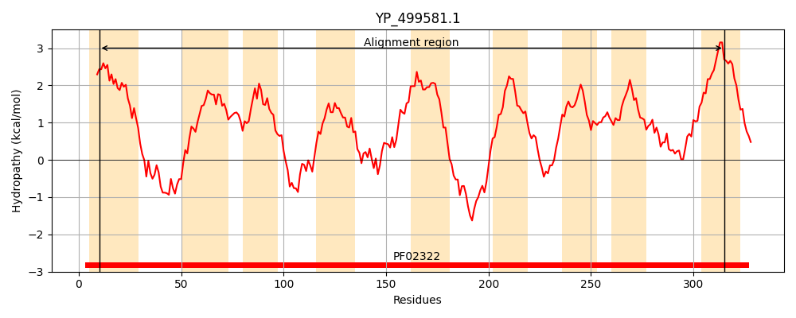
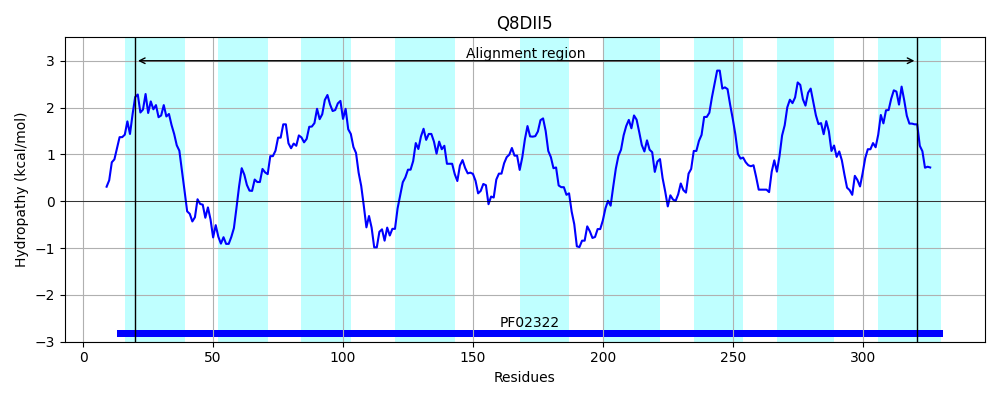
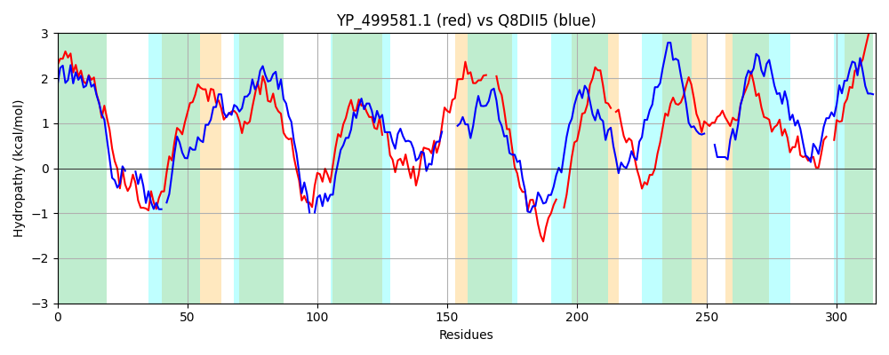

Hit Accession: Q8DII5
Hit TCID: 3.D.4.3.4
Hit Description: gnl|BL_ORD_ID|16001 gnl|TC-DB|Q8DII5|3.D.4.3.4 Cytochrome oxidase d subunit II OS=Thermosynechococcus elongatus (strain BP-1) GN=cydB PE=4 SV=1
Mach Len: 315
e:0.000000
Query TMS Count : 9
Hit TMS Count: 9
TMS-Overlap Score: 6.950000
Predicted Substrates:CHEBI:5584;hydron
BLAST Alignment:
Score: 190 , Bit scores: 77 bits, E-value: 3.7e-16, Alignment length: 315, Percentage identity: 23
Query: 10 VLWLFLFCYIIIASIDFGAGFFALHSKLTGDEKKINHLISRYLNPVWEVTNVFFVFFFVGFVGFFPESIKYLGTVLLIPGSIALIMISLRNSFYAFENYGQDTKLAWMIMYGVSGLLIPASLSTAL-TITEGGYINVRNNVIDLDWVQLLLSPFAWSVVFLAIISV---LYISSGFLTYYAKKANDEPAYNLT--RQWHIFLGPPMIIICLFVF-LSLRIQNSEHFYSAVFDYWWMFGISFLFFALASLLTFFKKKHGLAFVFVILQMMFAFFGYGISKLPYLLYPFVKITDAYVNP--EMGWTLVIVFILGLLL 315
+L LFLF YI++ D G G +L S +E++ N L++ L VW+ + V G FP + + L +P I ++ + LR + F + K W + +G+ L A+ T+ EG ++ + W L W + +A+ + + I S +L Y + Y W F+G +I I +F LR Q + +F + G+ +F L SL K++ + V+ L + +F G G P ++ P V I +A +P ++ + + F++ ++L
Sbjct: 20 ILGLFLFLYILLDGFDLGIGILSLTSS---NERRRNILMTS-LGNVWDANETWLVLMGGSLFGAFPLAYATILNALYLPAVIMVVGLILRAVSFEFRE-NANNKRVWNLAFGIGSFLAALGQGFAVGTVFEGIKVDAAGHFAGGIWDWL-----TWHSLLVALTLIQGYVLIGSTYLIYKTTGELQQTHYRTATIAAWTTFIGAVLITITAPIFHEQLRAQLFQPPLFYIFAAIPLLGVLLIFLLLRSLQ---KREEVMPLVWTFLLFLLSFIGLGFVIFPNIIPPSVTIYEASASPSAQVFMLIFVAFLIPIML 321 | Protein Hydropathy Plots: |
|---|
|  |  |
Pairwise Alignment-Hydropathy Plot:
|
|---|
|  |